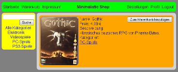

Minimalistic Shop is a website, that was created in the summer semester 2013 at the Relational Databases course of B.Sc. Media Systems (B-MS).
This technical demonstration of a online marketplace offers various product categories for purchase. Products that are added to the shopping cart can be ordered after registering or loging into an user account. The product categories are arranged hierarchicallly, products can be in several categories, and the search can be limited to a specific category.
The task specification for the project required it to use Java classes, JDBC, Tomcat and JSP. Instead of Java, I've used Scala to generate compiled Java classes. The JSP files don't contain any application logic, but each JSP calls a single Scala method with the parameters of the HTTP connection.
The architecture of the Scala project is structured into three packages. One package for the database access via prepared statemens, the business logic and transactions, another package for the XML output generation, and the last package to validate the input parameters and act according to them. The XML that the website provides is parsed to HTML with XSLT 1.0 by the client's browser.
The Minimalistic Shop is available here.
Since I moved the site from another server, an unknown error with the server cache occurs sometimes, which I haven't investigated yet. It should only occur once per visit and is gone when the desired page is requested again.
| Languages | Scala, SQL, XML, XSLT, HTML, CSS, JavaScript, Java[1]The only usage of Java source code in this project is in the JSP files and in reused bcrypt and Mersenne Twister classes from one of my older projects. |
|---|---|
| Technologies | XSD, DTD, MySQL, Prepared Statements, JDBC, bcrypt, Mersenne Twister, BigDecimal, Tomcat, JSP |
| IDE | Eclipse with Scala IDE |
| Participants | 1 |

{kind=link}